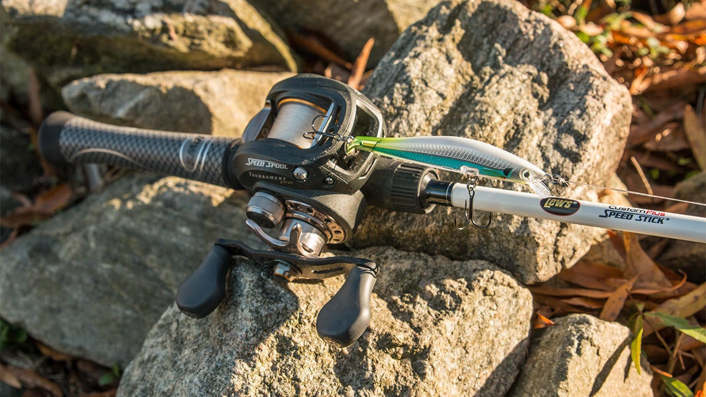
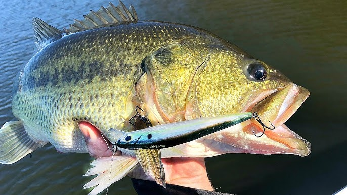

One of the simplest, yet most effective tools an angler can have in their arsenal is a jerkbait. This lure can be used from coast to coast and is
responsible for catching tons of giant bass. This lure is extremely easy to use and doesn’t require any specialized equipment. You can fish this bait in a variety of
scenarios, and it truly works on every lake in the country. Throwing a jerkbait is simple, however there are several nuances that will help you become a more
successful jerkbait angler. This feature highlights some of those nuances while explaining how to fish a jerkbait.
ROD

Rod, Reel, and Line
A medium action, fast flex and can throw lighter baits with ease. This rod is truly an
all around rod and specifically designed for a lot of techniques. You will be able to use this rod for other techniques than a jerkbait. The 7'2" length
is a little longer than some other fisherman's jerkbait rod, but anything in the 6'9" - 7'2" length range will work. The most important thing to pay attention
to is the actions of the rod.
The medium action allows it to cast the light weight of the jerkbait, and the fast tip helps get good hook penetration with a lot of line out into the water and
the slack line you often get when fishing a jerkbait.
The medium action allows those treble hooks to stay in the fish on the fight back to the boat, the medium action enables the rod to take the brunt of the fight, and
isn’t too stiff and causes the hooks to pull out of the fishes mouth.
REEL
Jerkbaits are often most effective in windy conditions, and when paired with light line, they can be exceptionally difficult to cast. Using a compact 70–100 casting
reel can help combat these challenges, as the shallow spool rotates with less inertia, which translates into longer casts and fewer backlashes.
Ideally, a reel with a gear ratio from 6:1 to 7:1 is the sweet spot. If you use a reel that's too fast, you run the risk of overpowering the action of your ripbait by
pulling in too much line.
Once again, if the situation calls for working a finesse jerkbait, a 3000-size spinning reel is the right tool for efficiently picking up line and having plenty of
line capacity.
LINE
In most cases, fluorocarbon in the 10-lb to 12-lb range is the best choice for jerkbaits. Nearly invisible underwater, fluorocarbon is crucial when your cadence involves
long pauses and fish get plenty of time to stare down your jerkbait.
If the fishing is really challenging and the water is crystal clear, or if you need a little extra depth out of your jerkbait, dropping down to 8-lb test can make a big
difference.
Alternatively, when the water is dirty and the fish are higher up in the water column, a heavier line will keep your jerkbait closer to the surface and provide some added
insurance around large fish.
The charm of fishing is that it is the pursuit of what is elusive but attainable, a perpetual series of occasions for hope."
-John Buchan
How & When To Jerkbait!

Twitch, Pause, Twitch
Working a jerkbait is fairly simple, and it often depends on the fishes mood. Paying attention to how bass react to your bait is key to finding the right cadence for
your lure. Hints the name, you fish a jerkbait by employing a series of erratic jerks and pauses. This causes the bait to dart from side to side closely imitating a
dying baitfish. Fish often prefer different cadences based on their mood and species.I’ve found that spotted bass typically prefer a series of fast erratic jerks with
little to no pause in between. This keeps them engaged on the lure and prevents them from getting a good look at the bait. Largemouth on the other hand often prefer
a slightly slower retrieve with intermittent pauses. Largemouth are often much slower than spotted bass, and this cadence allows them enough time to get keyed in and
eat your bait.
Deciding when to throw a jerkbait is another key component in finding success with this lure. You can throw a jerkbait during all four seasons, however there are a few
specific conditions that really foster success. Wind is almost always your friend when throwing a jerkbait. Wind breaks up the surface of the water. This keeps bass
from getting a good look at your bait and makes them much more willing to bite. Throwing this bait around wind blown points, banks or pockets are all great locations
during these conditions.
Forage is another important factor when throwing a jerkbait. Jerkbaits imitate fish such as shad and bluegill, so it’s important that bass are feeding on similar types
of forage. This makes them much more susceptible to your bait as opposed to when they’re feeding on other types of forage such as crayfish or grubs. Last but certainly
not least, looking for active fish is essential for getting bit. This beans finding fish that are willing to chase down bait. A lot of this however is trial and error,
so rotating baits and locations is your best bet for finding the ideal jerkbait location.